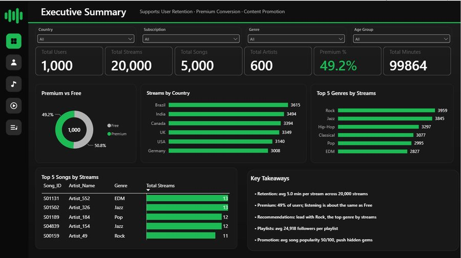
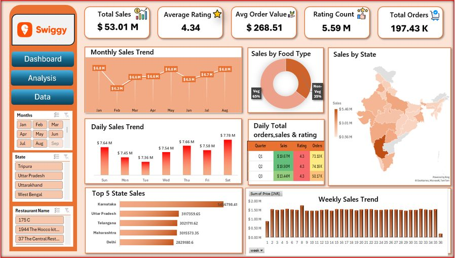
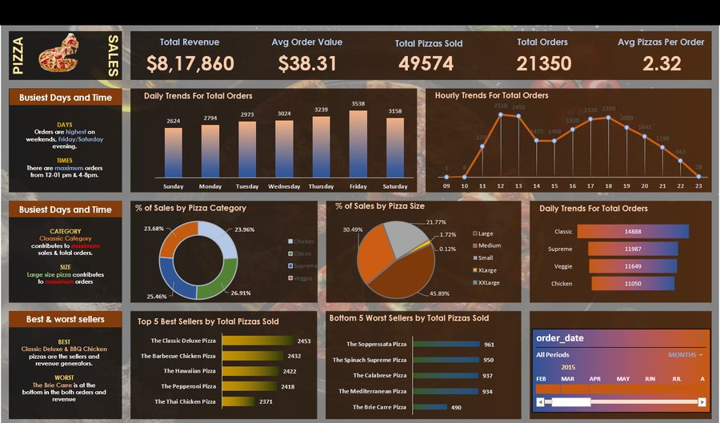

I validate messy multi-agency data and turn it into dashboards and statistical answers that decision-makers act on. With a background in mathematics and disaster management, I'm used to getting the numbers right when stakes are real and time is short.
My first analytics work was in emergency operations, where a wrong figure in a situation report has real consequences. That shaped how I work: reconcile the sources, question the data, then build the dashboard. Today I apply the same discipline to HR, sales and marketing data, backed by an M.Sc. in Disaster Management and a B.Sc. in Mathematics.
Power BI, Excel and Tableau dashboards with KPIs agreed upfront, slicers, and a written summary of what the data says.
Reconciling sources and catching gaps and inconsistencies before they reach a report.
Hypothesis tests, A/B tests and regression, reported with the effect, the confidence and a clear next step.
Showing where problems cluster: loss heatmaps and clustering for site selection, using QGIS, ArcGIS and Python.
Pull, join and shape data from source systems into analysis-ready tables.
SQL (T-SQL, CTEs, joins, views)SQL Server (SSMS)PostgreSQLMySQLBigQueryData modelingETL pipelinesClean, explore and test hypotheses before anything reaches a report.
PythonPandasNumPySciPyStatsmodelsScikit-learnData cleaningEDAHypothesis testingA/B testingGen AI-assisted analysisGit and GitHubTurn results into dashboards and summaries stakeholders can use.
Power BI (DAX)TableauExcel: Power Query, Power Pivot, VBAPivot tables and slicersKPI designMatplotlibSeabornMap patterns when location matters.
QGISArcGISGoogle Earth EngineGeoPandasFoliumQuestion. Across 150,243 Yelp businesses, which city-category segments combine strong ratings with strong review activity?
Finding. 561 city-category segments passed the screen (10+ businesses, 4.0+ rating, 50+ reviews each). New Orleans Historical Tours stands out at about 179 reviews per business, roughly 4× the dataset average of 44.
Recommendation. Evaluate New Orleans Historical Tours and Santa Barbara Wine Tours first. This is a screen, not proof of unmet demand, so next check closures and competition.
PythonSQL ServerT-SQLPower BIQuestion. Does Facebook Ads or Google AdWords deliver conversions at a lower cost?
Finding. Facebook's cost per acquisition was 13.08 vs 21.02 for AdWords (about 38% lower), with roughly 2× the conversions. A paired test on 658 matched dates confirmed it (mean difference −8.50, 95% CI −9.52 to −7.48). AdWords drove more clicks but under half the conversions.
Recommendation. Judge channels on cost per acquisition, not clicks. The data is observational, so run a randomized test before moving budget.
PythonPandasPaired t-testWilcoxonQuestion. Which product categories repay their ad spend? An API pipeline feeds BigQuery, and a live Tableau dashboard reports the result.
Finding. Category ROAS ranged from 21× in Women's Clothing, which got the higher spend, to 374× in Jewelry.
Recommendation. Test shifting budget toward Jewelry, and check order volume first so a small base doesn't inflate the ratio.
PythonSQLBigQueryTableau
Question. Does Premium status lift listening time, and where is Premium adoption weakest?
Finding. No. Premium and Free users listen the same (99.5 vs 100.2 minutes per user, Welch t-test p = 0.63). Adoption is lowest in Canada (43.2%) and among ages 45–54 (42.4%).
Recommendation. Sell Premium on Premium-only features rather than engagement, and target the lowest-adoption segments.
PythonPower BIExcel
Question. Which states, months and customer segments drive sales across 197,430 Swiggy order records?
Finding. ₹53.01M in sales at an average order value of ₹268.51. Karnataka leads all states, and vegetarian orders make up 65% of volume.
Recommendation. Prioritize restaurant onboarding in the top-revenue states and curate partner menus around the vegetarian majority.
ExcelPivot TablesSlicers
Question. What do a year of orders show about demand timing and product mix?
Finding. $817,860 in revenue from 21,350 orders, averaging $38.31 per order. Friday is the busiest day, and category sales are evenly balanced (Classic about 27%, Supreme about 25%).
Recommendation. Schedule staff around the Friday peak, and keep all four categories on the menu since none dominates.
SQLMySQLExcelHR analytics: built a Power BI dashboard (DAX, data model) linking workforce cost, attrition by role, tenure, location and performance, safety incidents and reward alignment, with a written insight and recommendation for each problem area.
Sales analytics: built an Excel reporting dashboard with Power Query, Power Pivot (DAX), slicers and what-if analysis, and added a VBA refresh so non-technical users can update it themselves.
Acted as the reliable source of figures during live emergency operations. Cleaned and reconciled incident and resource data from administration, health and emergency departments into structured situation reports for district leadership, and tracked key figures in real time to support operational decisions.
Collected, cleaned and validated datasets from multiple agencies for analytical reports, and helped standardize information-management and reporting processes in the revised national Handbook of Multi-Sector Coordination for Emergency Response.
Analyzed multi-source government datasets to support planning decisions, and ran data quality checks on large multi-agency datasets so downstream dashboards and reports stayed accurate.
Project figures come from self-directed work on public or simulated datasets, as labelled on each card.
Pondicherry University · 2023–2025. Risk, response coordination and information management under pressure.
University of Calicut · 2019–2022. The foundation for statistics, testing and modelling.
Data Analytics with Gen AI (BEAT Educations, 2026) · Python for Data Science (Coursera) · Remote Sensing and GIS (IIRS) · GIS for Climate Action (Esri)
I'm open to Data Analyst and BI Analyst roles. Send me a dataset, a problem or a role description and I'll tell you how I'd approach it.
☎ +91 97454 52689
⌖ Kozhikode, Kerala, India
● Open to Data Analyst / BI Analyst roles